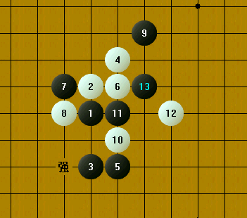

改进的爱五子棋打谱软件（2.1版本）
#1 改进的爱五子棋打谱软件（2.1版本） 作者：4 发表时间：2009-7-8 3:40:57
爱五子棋打谱软件1.0使用方法介绍
最新版本见：爱五子棋打谱软件2.2版本发布，可计算VCF，免杀
感谢大家使用中提出的建议意见,几天加班加点把打谱软件改进了一下.希望大家继续提建议意见.
主要改进如下:
激活禁手显示功能.
激活着法演示功能.(着法->演示,可用ESC键停止演示.可用F1键,出现一对话框,右上角每个局面计算时间设置每个局面停留时间)
激活VCF功能,(双击有子的地方可计算VCF,若难度较大,可用ESC键停止)
激活设置->格数功能,可以设置5-20的棋盘格数.
激活工具->合并同型功能.
激活工具->合并同型->前三手标准谱型功能.
激活无禁,六不赢等设置打谱功能,可摁F1键,在出现对话框的中间栏靠下可以设置.
其他改进:
使用图片做背景时,盘面标记背景透明显示.
大体就这么多,还是希望大家多提建议意见,把软件做到最好.
 爱五子棋打谱软件.rar
爱五子棋打谱软件.rar
［ 下棋思思 于 2009-7-8 8:01:58 时花20金币送鲜花一朵］
［ 失落刀 于 2009-7-8 10:44:54 时奖励此帖[金币加 20 威望加1］
［ 越狱行辕 于 2009-7-8 18:35:41 时花20金币送鲜花一朵］
［ 掌棋宣传员 于 2010-8-27 0:53:07 时花20金币送鲜花一朵］
［此帖子已被 有志青年 在 2010-9-28 23:13:40 编辑过］
［ 龙小小 于 2011-3-13 10:01:48 时花20金币送鲜花一朵］
［此帖子已被 失落刀 在 2011-3-27 18:22:40 编辑过］
［此帖子已被 有志青年 在 2011-10-28 8:39:22 编辑过］
［此帖子已被 有志青年 在 2011-10-31 11:16:21 编辑过］
#2 Re:改进的爱五子棋打谱软件 作者：极地剑客 发表时间：2009-7-8 5:44:40
本人看来是第一个啊~下来试试~#3 Re:改进的爱五子棋打谱软件 作者：越狱行辕 发表时间：2009-7-8 6:28:05
演示的时候无禁手显示
#4 Re:改进的爱五子棋打谱软件 作者：越狱行辕 发表时间：2009-7-8 6:32:54
是我看错了
是有标记的禁手点 位置看不见
#5 Re:改进的爱五子棋打谱软件 作者：越狱行辕 发表时间：2009-7-8 6:35:55
#6 Re:改进的爱五子棋打谱软件 作者：极地剑客 发表时间：2009-7-8 7:27:02
楼上棋子不错啊~有提供下载不~#7 Re:改进的爱五子棋打谱软件 作者：下棋思思 发表时间：2009-7-8 7:59:37
一次比一次强，虽然还没试用呢，先支持下！辛苦了#8 Re:改进的爱五子棋打谱软件 作者：黄药师 发表时间：2009-7-8 8:34:52
能打开QQ游戏保存的文件吗？#9 Re:Re:改进的爱五子棋打谱软件 作者：有志青年 发表时间：2009-7-8 9:40:19
引用：
原文由 黄药师 发表于 2009-7-8 8:34:52 :
能打开QQ游戏保存的文件吗？
qq棋谱本身有问题！qq游戏自己都打不开！
#10 Re:Re:Re:改进的爱五子棋打谱软件 作者：黄药师 发表时间：2009-7-8 9:55:36
引用：
原文由 有志青年 发表于 2009-7-8 9:40:19 :引用：
原文由 黄药师 发表于 2009-7-8 8:34:52 :
能打开QQ游戏保存的文件吗？qq棋谱本身有问题！qq游戏自己都打不开！
 就是这个问题，上次下了一盘，保存下来，发现什么东西都打不开！
就是这个问题，上次下了一盘，保存下来，发现什么东西都打不开！
#11 Re:改进的爱五子棋打谱软件 作者：黄涛 发表时间：2009-7-8 10:04:22
非常感谢
#12 Re:改进的爱五子棋打谱软件（2.1版本） 作者：丝袜伯爵 发表时间：2009-7-8 11:40:32
看上去很强大，具体怎么能用好，还得请大家仔细的研究#13 Re:改进的爱五子棋打谱软件（2.1版本） 作者：启蒙 发表时间：2009-7-8 11:42:23
太感谢了#14 Re:改进的爱五子棋打谱软件（2.1版本） 作者：启蒙 发表时间：2009-7-8 11:49:28
请问小4LS，演示功能我很喜欢，但可以设置一下演示的时间间隔吗？谢谢#15 Re:改进的爱五子棋打谱软件（2.1版本） 作者：启蒙 发表时间：2009-7-8 11:51:54
恩，会了，刚看到。HOHO#16 Re:Re:改进的爱五子棋打谱软件 作者：uniwin 发表时间：2009-7-8 12:58:50
引用：
原文由 极地剑客 发表于 2009-7-8 7:27:02 :
楼上棋子不错啊~有提供下载不~
答复6楼的提问：在爱五子棋打谱软件中 设置-》盘面显示-》盘面显示-》背景图片，使用本帖子上传的棋盘、黑子、白子，分别设置使用bmp背景图片、黑棋用图片、白棋用图片并打钩，即可出现5楼的效果。
另外，向楼主建议：使用爱五子棋打谱软件右上角的最大化/向下还原按钮后，程序窗口只能还原到最大化窗口的95%左右，还是遮着其他的程序窗口。如果能还原到最大化窗口的50%左右，或者可以还原到自定义比例的大小就好了。
#17 Re:改进的爱五子棋打谱软件（2.1版本） 作者：极地剑客 发表时间：2009-7-8 14:15:17
合并大谱跟玩菜似的~一口气合并N多个~也不喘气了~她好我也好~#18 Re:改进的爱五子棋打谱软件（2.1版本） 作者：不知 发表时间：2009-7-8 22:01:35
 原来真正的神乎奇迹不是人类..是软件..
原来真正的神乎奇迹不是人类..是软件..
#19 Re:改进的爱五子棋打谱软件（2.1版本） 作者：极地剑客 发表时间：2009-7-11 19:30:18
感谢小四~帮我解决了几个非常强大的问题!!!!!!!!!!!!!!!!!!!!!!!!!!!!!!!!!!!!#20 Re:改进的爱五子棋打谱软件（2.1版本） 作者：安娜制作所 发表时间：2009-7-13 9:54:35

#21 Re:改进的爱五子棋打谱软件（2.1版本） 作者：失落刀 发表时间：2009-7-13 11:55:52
一打开就是可编辑状态，可不可以如同RENLIB一样，打开后是只读状态？若需要编辑，有相应的编辑按钮这样。#22 Re:改进的爱五子棋打谱软件（2.1版本） 作者：4 发表时间：2009-7-14 6:21:15
有那么个编辑按钮的呀，打开谱后，把那个编辑按钮（第四个按钮）松开，就是只读状态了。用的少，估计那按钮错误不少。#23 Re:改进的爱五子棋打谱软件（2.1版本） 作者：失落刀 发表时间：2009-7-14 16:49:41
期待小4继续完美打谱软件。
#24 Re:改进的爱五子棋打谱软件（2.1版本） 作者：谁比我更菜 发表时间：2009-7-17 20:09:05
4哥，怎么购买你的软件啊？#25 Re:改进的爱五子棋打谱软件（2.1版本） 作者：风城 发表时间：2009-8-6 6:57:40
 开始疯狂合并棋谱.....
开始疯狂合并棋谱.....
#26 Re:改进的爱五子棋打谱软件（2.1版本） 作者：悟石 发表时间：2009-8-13 8:53:46
好像有木马？
#27 Re:改进的爱五子棋打谱软件（2.1版本） 作者：4 发表时间：2009-8-15 3:43:57
软件纯绿色,没带木马,可能是杀毒软件误报.#28 Re:改进的爱五子棋打谱软件（2.1版本） 作者：团子亲卫队 发表时间：2009-8-21 17:28:40
希望能像Renlib一样支持上下左右的键盘功能
#29 Re:改进的爱五子棋打谱软件（2.1版本） 作者：设计路上 发表时间：2009-9-7 17:40:28
误报咋整呀.我电脑NOD32报警有木马,一解压就被移除了.唉.咋找一个打谱软件这么难呀.昨天我的renlib挂掉了.今天想下这个又不行,人生咋这么不顺呢?郁闷呀.
#30 Re:改进的爱五子棋打谱软件（2.1版本） 作者：4 发表时间：2009-9-9 8:18:07
打开NOD32,
点击 "工具"->"日志文件"
选定被隔离的打谱软件,然后点下面的"解除隔离".
#31 Re:改进的爱五子棋打谱软件（2.1版本） 作者：夏恋 发表时间：2009-9-9 9:04:40
先顶一下
虽然还没下
#32 Re:改进的爱五子棋打谱软件（2.1版本） 作者：极地剑客 发表时间：2009-10-25 8:13:53
怎么下载下来NOD32报毒了哦~以前下载都没有哦#33 Re:改进的爱五子棋打谱软件（2.1版本） 作者：魅公子 发表时间：2009-12-20 15:11:49
为毛提示有病毒？#34 Re:改进的爱五子棋打谱软件（2.1版本） 作者：猪猪快跑 发表时间：2010-1-20 3:00:43
软件```
有个病毒我草``
#35 Re:改进的爱五子棋打谱软件（2.1版本） 作者：4 发表时间：2010-1-21 1:06:05
软件没有病毒,是杀毒软件误报.
#36 Re:改进的爱五子棋打谱软件（2.1版本） 作者：秋叶散人 发表时间：2010-1-21 10:17:52
终结者之父，我想购买连珠终结者，请问怎么和你联系？
#37 Re:改进的爱五子棋打谱软件（2.1版本） 作者：追梦空灵 发表时间：2010-3-6 13:38:50
我的NOD32报毒。给删了。#38 Re:Re:改进的爱五子棋打谱软件（2.1版本） 作者：uniwin 发表时间：2010-4-15 9:53:15
回复26、29楼，nod杀毒软件报木马的解决方法：
1、nod（eav或者ess）点击工具-隔离，选中被删除并隔离的“爱五子棋打谱软件”，选择恢复。
2、右键点击工具栏nod软件的图标，选择“禁用病毒软件和间谍软件防护”；
3、nod主界面，设置-高级设置-病毒和间谍软件防护-排除，添加“x\\爱五子棋打谱软件.exe”；保存退出；
4、右键点击工具栏nod软件的图标，选择“启用用病毒软件和间谍软件防护”；
以后不会对爱五子棋打谱软件报毒了！！
［此帖子已被 uniwin 在 2010-4-15 9:54:55 编辑过］
#39 Re:改进的爱五子棋打谱软件（2.1版本） 作者：yndoc 发表时间：2010-6-5 19:17:42
非常感谢！五子棋一定会得到更好发展。#40 Re:改进的爱五子棋打谱软件（2.1版本） 作者：巫山云雨 发表时间：2010-7-24 12:51:28
呵呵使用一下呀 谢谢
#41 Re:改进的爱五子棋打谱软件（2.1版本） 作者：yidefei 发表时间：2010-8-18 23:26:49
近来，似乎打谱软件用不了了。安全卫士360提示为病毒。虽然明知不是病毒，可有什么办法解决一下呢？
#42 Re:改进的爱五子棋打谱软件（2.1版本） 作者：如果的事 发表时间：2010-9-2 23:11:36
现在好像好了，这个能用了
#43 Re:改进的爱五子棋打谱软件（2.1版本） 作者：九洲王子 发表时间：2010-9-4 13:57:54
下载了这个 “20097832859.rar” 怎么使用 高手教教
打开不了
#44 Re:改进的爱五子棋打谱软件（2.1版本） 作者：五子米猫 发表时间：2010-9-12 11:13:49
真的是很好的软件！期待2.2版#45 Re:改进的爱五子棋打谱软件（2.1版本） 作者：丌同 发表时间：2010-9-16 22:05:53
还是下载2.1的看看，1.0的先放放#46 Re:改进的爱五子棋打谱软件（2.1版本） 作者：丌同 发表时间：2010-9-16 22:07:34
老大，有病毒。。。。。。。。。。。。360都能杀出来毒。#47 Re:改进的爱五子棋打谱软件（2.1版本） 作者：catman 发表时间：2010-10-4 15:33:02
软件下载后提示有木马#48 Re:改进的爱五子棋打谱软件（2.1版本） 作者：死劲哭 发表时间：2010-12-22 13:58:45
ESET 提示有病毒.怎么回事呀#49 Re:改进的爱五子棋打谱软件（2.1版本） 作者：李建峰 发表时间：2010-12-22 21:29:56
继续改进。#50 Re:改进的爱五子棋打谱软件（2.1版本） 作者：死劲哭 发表时间：2011-2-10 0:06:11
设置 --- 工具条显示 --- 解题
没有图标显示，不知道哪里的问题。
#51 Re:改进的爱五子棋打谱软件（2.1版本） 作者：岑小鱼 发表时间：2011-2-14 21:44:04
顶起来 好找一点
#52 Re:改进的爱五子棋打谱软件（2.1版本） 作者：有机硅硅 发表时间：2011-3-12 17:43:51
谢谢楼主，下载下来看看。楼主真是个有心人呀。#53 Re:改进的爱五子棋打谱软件（2.1版本） 作者：龙小小 发表时间：2011-3-13 10:03:35
支持。。。。#54 Re:改进的爱五子棋打谱软件（2.1版本） 作者：某某某怕怕 发表时间：2011-3-27 8:18:02
感觉好好哦 谢谢楼主辛苦了#55 Re:改进的爱五子棋打谱软件（2.1版本） 作者：葬花 发表时间：2011-10-13 19:45:11
 下载下来提示含有木马，哎，囧了。
下载下来提示含有木马，哎，囧了。